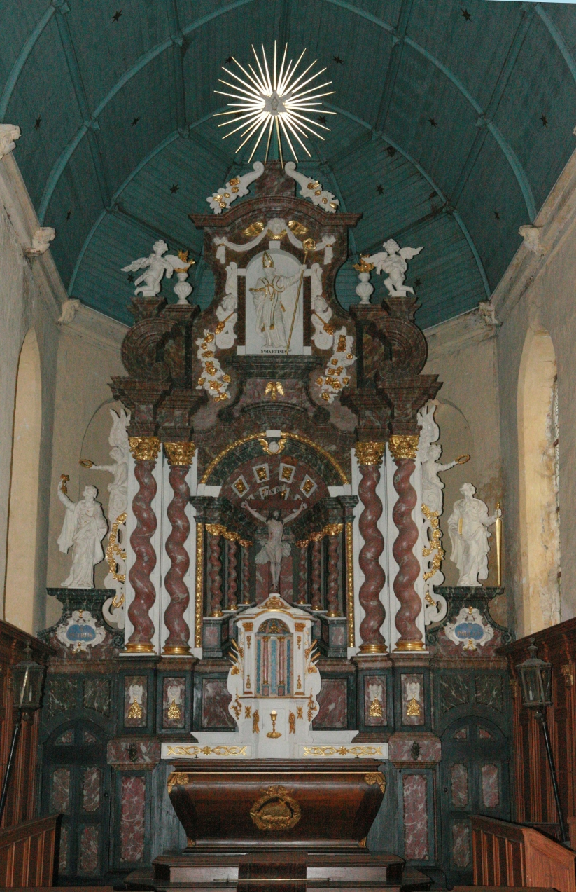

Association
RETABLES de FLANDRE
Dans l'arrondissement de Dunkerque sont situées 115 communes dont 62 possèdent un ou plusieurs retables classés ou inscrits à l'Inventaire des Monuments historiques.
Conseil d'Administration Bulletin d'adhésion 2022
Retable du maître-autel - Wemaers-Cappel
Le contexte
Situation juridique
Les églises et leur mobilier sont propriété des communes depuis 1905. Le clergé affectataire
en a l'usage mais ne peut en disposer. Les inspecteurs et contrôleurs des Monuments historiques
et les Conservateurs départementaux des Antiquités Objets d'Art (C.A.O.A) ont des missions
importantes en matière de protection et de surveillance, de conseil en conservation, de conduite
des travaux de restauration, d'instruction des dossiers de subvention. Ces subventions peuvent
aller jusqu'à 80 % des travaux de restauration.
Cri d'alarme
« Credo ou Requiem pour les retables de Flandre ». C'est le titre de l'article du Paul Ravera
paru dans un numéro 1990 de la revue Archeologia. Ce journaliste s'était bien documenté et
savait déjà que les responsables locaux et nationaux des Monuments historiques et les C.A.O.A.
avaient demandé, encore en vain, une aide d'urgence de l'État pour « un état des lieux ».
Opération Mon Patrimoine
Jack Lang, alors ministre de la culture, répond à ce cri d'alarme et décide que pour sa
4ème édition, l'Opération Mon Patrimoine sera consacrée aux retables des églises rurales
flamandes. Les journées de sensibilisation sont fixées aux 24, 25 et 26 mai 1991 et sont
organisées avec le concours de la sous-préfecture de Dunkerque et de la ville de Dunkerque.
La création de l'association
Une structure juridique s'avérait indispensable pour faire connaître ce patrimoine et recueillir des fonds aux fins d'aider financièrement les communes qui engageaient des programmes de restauration. Le Sous-Préfet, Bernard PREVOST, et Francis THULIE, son proche collaborateur, furent co-fondateurs de l'association dont les statuts ont été déposés le 19 avril 1991.
L'association est dirigée par un Conseil d'administration de 24 membres répartis en 4 collèges :
- Représentants de l'État (sous-préfet, DRAC, Conservateur régional des Monuments historiques…)
- Représentants des collectivités locales
- Représentants des curés desservants
- Représentants des adhérents
En 1993, M. José de BROUCKER est élu Président après André VIAU. Il présidera
pendant 15 années de mandat.
En 2003, l'Assemblée Générale crée un 5e collège de guides certifiés.
Le Conseil comprend désormais 31 membres.
En 2007, une modification statutaire recompose le Conseil à 26 membres.
Les buts de l'association
Poursuivre la recherche sur l'histoire et l'environnement des retables.
Diffuser l'information concernant ce patrimoine (documents, conférences, visites…)
Rechercher et mobiliser les moyens financiers publics et privés pour la sauvegarde.
Participer au développement de circuits touristiques intégrant les retables de Flandre.
Ressources
Les cotisations des adhérents et les subventions des collectivités territoriales assurent pour l'essentiel le fonctionnement de l'association.
Les dons reçus, notamment à l'occasion des visites guidées, ainsi que les produits de vente des livres sont portés au compte d'un Fonds de ressources affecté aux aides sollicitées par les communes qui réalisent des programmes de restauration de retables.
De 1989 à 2021, quarante et un retables ont été restaurés. Notre Fonds de ressources y a contribué pour 39 d'entre eux.